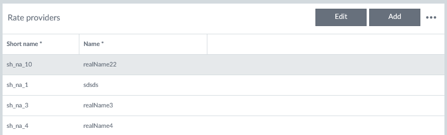
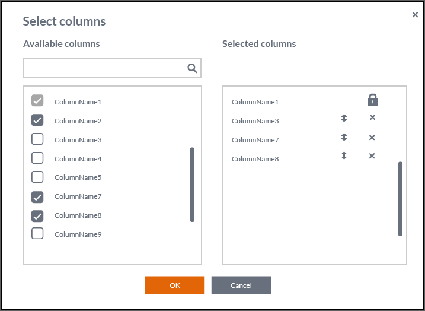

Grid
Description
Data grids show structured data and their purpose is to make that data readable, scannable and easily comparable.
Loading data
Data grid content shows the waiting indicator when loading of the data is ongoing (data grid column headers are visible). If there is no data available there should be a guidance text “There are no items to show in this grid.” This must be added to each grid so that all needed localizations are taken into account.
Features
The size of the grid is adjusted automatically by the container it is in. If the grid does not fit, then a scrollbar appears so that the header row remains visible. Here are the main features of the grid:
- The content of cells can be defined based on the needs.
- Cells can include e.g. icons with or without actions.
- Actions for mouse events must be added case by case.
- Data grid rows are not automatically resized based on the content, and text is not wrapped i.e. there is always one row of data in one row. If the text is longer that fits it is cut and this is indicated with ellipsis (…).
- User can select and reorder shown columns.
- User can resize the columns by dragging the line between the columns in the column title area.
- The width of every column must be set.
- The row height can be adjusted if needed.
- The keyboard navigation is not supported by default.
- Sorting direction is indicated in a column header with an arrow. Default sorting can be defined.
- Filtering is by default off. If it is set on the grid includes a row with action bar. Text filtering is case insensitive with contains operation.
- The width of every column must be set. The data grid has optional features e.g. row selection (focus), context menu, filtering and multi selection (with or without checkboxes), and inline editing.
Action bar
Grid’s action bar is shown if filtering or/and inline editing is on or there is custom actions defined for the grid. User can open Grid’s action menu with ellipsis (…) from the action bar. Available actions are (if they are turned on): Show filtering row/Hide filtering row, Delete row and Select and reorder columns. Also custom actions can be added to this menu. Action bar enables custom header text or other components like buttons. The custom area is divided into right and left areas.
Inline editing
If inline editing is enabled the grid can be in two different modes:
- Add mode: Existing entries cannot be edited. If user presses “Enter”, a new row is added. .
- Edit mode: Existing entries can be edited but new ones cannot be added.
Action buttons are shown in action bar if inline editing is enabled (Edit, Add / Save, Cancel).
Column alignment
- Columns that contain ONLY numerical data are always aligned to the right e.g. money amounts which are by default shown with two decimals.
- Columns that contain dates are aligned to the right.
- Columns that contain other types of data: text, numbers+text (including IBAN, BBAN) are aligned to the left.
Row multiselection
- Multiselection is an optional feature for the data grid usage, and it is utilized for mass action use cases.
- The leftmost column is reserved for the multiselect checkboxes, where one click/tap onto checkbox selects the row, and the second click/tap onto checkbox unselects it.
- There are also keyboard shortcuts for selecting one or all (with ‘Shift’ hold) between the first and second row click, or selecting miscellaneous rows (by holding ‘Ctrl’). These shortcut selections can be done from any horizontal spot of the row i.e. not only onto checkboxes.
Filtering
Filtering row can be set to be always visible or available for the user via grid's menu with action "Show filtering row". Data type and amount define which filtering option is used:
- Multiselect list when having maximum ten different values in that column. Values are presented ascending order in a popup.
- Date picker for filtering rows of the specific date.
- Free text entry field in case column has more than ten different values. Entered character string is matched with ‘contains’ operator for the column values i.e. a match might be even middle of the value.
Column selection
Column selection and prioritization can be set available for the user via grid's menu with action "Select columns". This feature can be used e.g. if there is a lot of columns available or if different customers or users prioritizes offered data differently. This functionality is offered via a separate dialog:
- User can select columns with checkboxes from the Available columns list.
- Selected columns list displays the selected columns.
- User can unselect columns with checkboxes in the Available columns list or with x-ison in the Selected columns list.
- If there are no items in the Selected columns list the text “No columns” is shown instead of column names.
- A scrollbar is shown if the list(s) has more items than fits.
- User must be able to filter available columns list, because there may be many of those.
- User can change the column order by dragging the arrows up/down icon. The actual column order in a grid is updated after the user presses the OK button.
- User can select “Cancel” and then all changes are discarded.
- Locked items in the Selected columns list (indicated with a lock icon) cannot be removed or moved in the column order (arrows up/down icon is not shown for those). The locked columns are shown in the available columns list with disabled and selected checkbox.